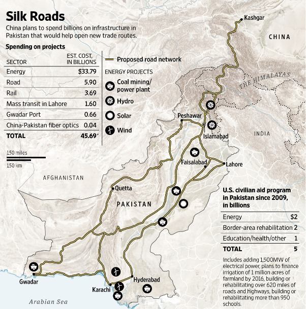

2015-04-18 19:49
中共在AIIB大获全胜，完全超出任何人的意料，包括中共自己在内。这不但刺激美国积极推行TPP和TTIP等反制手段（参见前文《帝国大反击》），对中共领导核心也是一个很大的鼓励，有了新的动力来对外增强其经贸的影响力。当然，这意味着中美双方都必须拿出支票簿准备花钱，不过中共的4万亿美元外匯存底本来就已经没有什么边际效益（No Marginal Benefits，亦即太多了，再增加完全没什么好处；这是中共人民银行官员的评语），拿来交换地缘利益其实是物尽其用。
中方的下一步棋是对巴基斯坦的基础建设援助计划，叫做“中巴经济走廊”，总规模达到了460亿美元，预计在习近平后天访问巴基斯坦期间正式宣布。其实巴基斯坦在去年就邀请习近平出席他们的国庆日阅兵，但是中方完全没有公开的反应；我个人认为是因为巴基斯坦的治安太糟糕，又有CIA的庞大组织，连自己的总理都不一定保得住，更别提中共领导人了。这次访问必然是一年来，双方安保单位辛苦筹划的结果；尤其是ISI（Inter-Services Intelligence，巴基斯坦的联合军种情报局）必须给中方足够的安全保证，否则像习近平这种CIA“不介意”发生意外的外国领袖，去Islamabad访问等同自杀。

中共需要的是到印度洋的走廊，但是从新疆到Gwadar的公路、铁路、光纤和港口一共只用掉100亿美元。其他的360亿美元主要花在巴基斯坦自己亟需的电力供应上，预计将增加17GW的发电量，相当于巴基斯坦目前装机容量的100%。这还不包括上个月已经决定的从Gwadar到Hyderabad的天然气输气管。相比之下，美国在过去六年，一共只给了50亿美元，而且分得太散，结果是杯水车薪、无济于事。
目前中国和欧洲的贸易路线基本上就只有走印度洋的海路，从中东来的原油也同样必须走这条路线，不但沿途有印度、越南等不完全友善的国家，而且马六甲海峡更是美国海军控制全球海运的主要节点之一。要避开这个节点有很多方案，从东到西顺时针分别为：
1. 泰国的克拉地峡（Kra Isthmus）运河。原本前总理英拉已准备全面倒向中共，不但要加入中方的东南亚高铁网，而且克拉运河也即将筹建，但是军方政变之后，改回了过去一百多年来的摇摆外交策略，开始在中美日之间讨价还价，以榨取最高利益。我个人认为泰国局势不稳，中共应静以待变，先开发高棉和寮国；泰王已不久人世，一旦新王继位，新政府了解到美日不可能喊出胜过中国的价钱，摇摆外交纯属浪费时间，自然会回头合作。
2. 缅甸。输油管和输气管已经开通，但是高铁和公路都出了问题。这里同样是政局不稳，而且缅甸人民和乌克兰以及台湾一样，受美国宣传欺骗很深，对中方的投资抱有很大的敌意。所以和泰国一样，暂时不能再推进。
3. 经尼泊尔到印度出海。印度人还在做与中国争雄的大梦，而且青藏铁路运量极为有限，所以这条路虽然要建，它主要只影响与尼泊尔和印度的贸易，对通欧洲和中东的地缘政略没有太大的意义。
4. 巴基斯坦。巴基斯坦和缅甸一样，在北部有叛军，本身政局也不稳，但是因为与中共有非正式的抗印同盟，政府再怎么换，也必须保持对中国的絶对友善和依赖。虽然中方的起点-新疆-比邻接缅甸的云南离沿海腹地更远，但是走Gwadar可以避开整个印度海空军的控制区，伊朗更是与巴基斯坦接壤，将来输油管可以完全避开海路，所以这条路的确应该是重中之重。360亿美元花在煤电厂（参见前文《中共的煤电技术》）、水电站、太阳能电厂、风力电站、核电厂和地下铁，虽然表面上对地缘战略没有直接贡献，但是一方面消化中方过剩的產能，一方面帮助巴基斯坦发展经济、稳定政局，另一方面也是对泰国和缅甸这些骑墙国家的示范。只要交易结构得对，还是可能有商业利益，再加上战略上的价值，整体来说是很值得的。
5. 阿富汗。这是通伊朗的另一条路，不过阿富汗的内战还打得没完没了，目前顶多冒险挖挖矿，要建立地缘通道还言之过早。
6. 经中亚及俄国直通欧洲。这全是陆路，完全无需海路，中亚的两个问题斯坦（Turkmenistan和Kyrgyzstan）也可以轻易绕过，所以纸面上看来不错。但是俄系的铁路轨距和中国与欧洲用的标准轨不同，路程又远，所需的基建投资量极大，和中途国家（主要是俄国）分摊投资费用的谈判，难度很高。这是一个中长期努力的方向，但是未来几年，多半还是雷声大雨点小。
7. 经北冰洋的北方航道。依全球暖化的趋势，再过一两代的时间很有可能会开通，但是美军必然会控制白令海峡，而且缓不济急，对当前的战略考量没有意义。
中共的外交向来喜欢选一个示范样版：香港是对台湾文统的示范，巴基斯坦则将成为对所有开发中国家进行“一带一路”大投资的示范，所以这个“中巴经济走廊”在中共当前的政略计划里，有核心性的重要性；而其在地缘战略上的贡献，更是锦上添花。长期来看，巴基斯坦极有可能在未来中共地缘势力伸入印度洋的过程中，成为它最大的帮手。美国虽然还是全球的海权霸主，在这步棋上，是落了后手了。
【后注】我昨天写稿时忘了提，中共将出售8艘潜艇给巴基斯坦，不过这笔大约50亿美元的生意是机密，不算在公开的交易里面。